[[HEADER: Abstract]]
摘要
💡 上次提示:
Trajectory planning is vital for autonomous driving, ensuring safe and efficient navigation in complex environments. While recent learning-based methods, particularly reinforcement learning (RL), have shown promise in specific scenarios, RL planners struggle with training inefficiencies and managing large-scale, real-world driving scenarios. In this paper, we introduce CarPlanner, a Consistent autoregressive Planner that uses RL to generate multi-modal trajectories.
The auto-regressive structure enables efficient large-scale RL training, while the incorporation of consistency ensures stable policy learning by maintaining coherent temporal consistency across time steps. Moreover, CarPlanner employs a generation-selection framework with an expert-guided reward function and an invariant-view module, simplifying RL training and enhancing policy performance.
轨迹规划对于自动驾驶至关重要，确保在复杂环境中实现安全高效的导航。虽然近期基于学习的方法，尤其是强化学习（RL），在特定场景中显示出潜力，但RL规划器在训练效率和管理大规模、真实世界的驾驶场景方面存在困难。在本文中，我们介绍了CarPlanner，这是一种一致的自回归规划器，利用RL生成多模态轨迹。
自回归结构使得大规模RL训练更加高效，而一致性机制通过保持时间步长之间的连贯性来确保稳定的策略学习。此外，CarPlanner采用了一种生成-选择框架，并结合了专家引导的奖励函数和不变视图模块，简化了RL训练并提升了策略性能。
💡 上次提示:
Extensive analysis demonstrates that our proposed RL framework effectively addresses the challenges of training efficiency and performance enhancement, positioning CarPlanner as a promising solution for trajectory planning in autonomous driving. To the best of our knowledge, we are the first to demonstrate that the RL-based planner can surpass both IL- and rule-based state-of-the-arts (SOTAs) on the challenging large-scale real-world dataset nuPlan.
Our proposed CarPlanner surpasses RL-, IL-, and rule-based SOTA approaches within this demanding dataset.
广泛的分析表明，我们提出的强化学习（RL）框架有效地解决了训练效率和性能提升的挑战，将CarPlanner定位为自主驾驶中轨迹规划的一个有前景的解决方案。据我们所知，我们是第一个在具有挑战性的大规模真实世界数据集nuPlan上证明基于RL的规划器能够超越IL-和规则基的现有最佳方法（SOTAs）的研究团队。
我们的CarPlanner在这个 demanding 数据集中超过了基于RL、IL和规则的最佳方法。
💡 上次提示:
[[HEADER: 1. Introduction]]
1. 引言
💡 上次提示:
Resource Figure_1
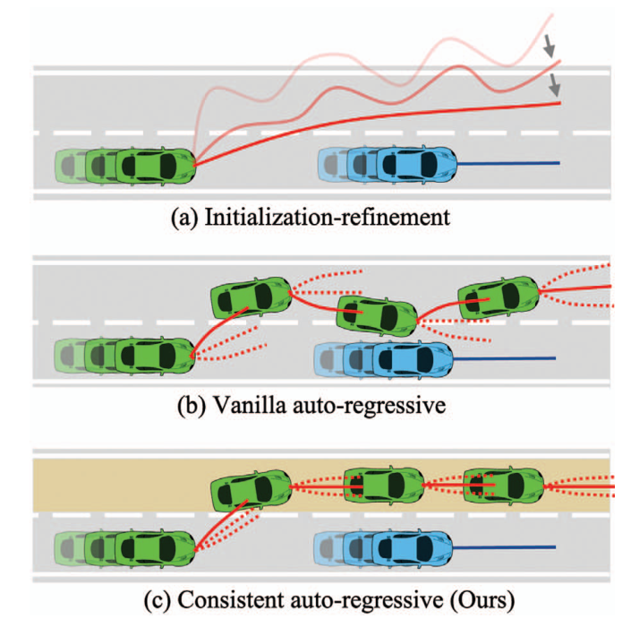Figure 1. Frameworks for multi-step trajectory generation. (a) Initialization-refinement that generates an initial trajectory and refines it iteratively. (b) Vanilla auto-regressive models that decode subsequent poses sequentially. (c) Our consistent auto-regressive model that integrates time-consistent mode information.
图1. 多步轨迹生成框架。 (a) 初始化-细化，该方法生成初始轨迹并迭代地对其进行优化。 (b) 传统的自回归模型，它们按顺序解码后续姿态。 (c) 我们的一致性自回归模型，它整合了时间一致模式信息。
Trajectory planning [36] is essential in autonomous driving, utilizing outputs from perception and trajectory prediction modules to generate future poses for the ego vehicle. A controller tracks this planned trajectory, producing control commands for closed-loop driving. Recently, learningbased trajectory planning has garnered attention due to its
potential to automate algorithm iteration, eliminate tedious rule design, and ensure safety and comfort in diverse realworld scenarios [36].
Most existing researches [11, 16, 29] employ imitation learning (IL) to align planned trajectories with those of human experts. However, this approach suffers from distribution shift [28] and causal confusion [8]. Reinforcement learning (RL) offers a potential solution, addressing these challenges and providing richer supervision through reward functions.
轨迹规划[36]在自动驾驶中至关重要，它利用感知和轨迹预测模块的输出来生成 ego 车辆的未来姿态。控制器跟踪计划的轨迹，从而产生闭环驾驶所需的控制命令。近年来，基于学习的轨迹规划因其能够自动化算法迭代、消除繁琐的手动规则设计并确保在各种实际场景中的安全性和舒适性而受到关注[36]。
大多数现有研究[11, 16, 29]采用模仿学习（IL）来使计划的轨迹与人类专家的轨迹对齐。然而，这种方法会遭受分布偏移[28]和因果混淆[8]的问题。强化学习（RL）提供了一种潜在的解决方案，通过奖励函数解决了这些问题并提供了更丰富的监督。
💡 上次提示:
Although RL shows effectiveness in domains such as games [34], robotics [19], and language models [25], it still struggles with training inefficiencies and performance issues in the large-scale driving task. To the extent of our knowledge, no RL methods have yet achieved competitive results on large-scale open datasets such as nuPlan [2], which features diverse real-world scenarios.
Thus, this paper aims to tackle two key challenges in RL for trajectory planning: 1) training inefficiency and 2) poor performance. Training inefficiency arises from the fact that RL typically operates in a model-free setting, necessitating an inefficient simulator running on a CPU to repeatedly roll out a policy for data collection. To overcome this challenge, we propose an efficient model-based approach utilizing neural networks as transition models.
Our method is optimized for execution on hardware accelerators such as GPUs, rendering our time cost comparable to that of ILbased methods.
尽管强化学习（RL）在诸如游戏[34]、机器人学[19]和语言模型[25]等领域显示出有效性，但在大规模驾驶任务中仍然面临训练效率低下和性能问题的挑战。据我们所知，目前还没有任何RL方法能够在nuPlan[2]这样的大型开放数据集上取得与之竞争的结果，而nuPlan则包含了多样化的现实世界场景。
因此，本文旨在解决强化学习在轨迹规划中的两个关键挑战：1）训练效率低下和2）性能不佳。训练效率低下的原因在于RL通常在一个无模型的环境中运行，需要依赖于CPU上的一个低效模拟器反复展开策略以收集数据。为克服这一挑战，我们提出了一种利用神经网络作为过渡模型的高效基于模型的方法。
我们的方法针对硬件加速器（如GPU）进行了优化，使得我们的计算时间成本与基于示例学习（IL）的方法相当。
💡 上次提示:
To apply RL to solve the trajectory planning problem, we formulate it as a multi-step sequential decision-making task utilizing a Markov Decision Process (MDP). Existing methods that generate the trajectory† in multiple steps generally fall into two categories: initialization-refinement [17, 20, 33, 45] and auto-regressive models [27, 32, 41, 46].
The first category, illustrated in Fig. 1 (a), involves generating an initial trajectory estimate and subsequently refining it through iterative applications of RL. However, recent studies, including Gen-Drive [18], suggest that it continues to lag behind SOTA IL and rule-based planners. One notable limitation of this approach is its neglect of the temporal causality inherent in the trajectory planning task.
为了将强化学习（RL）应用于解决轨迹规划问题，我们将该问题形式化为一个多步序贯决策任务，并利用马尔可夫决策过程（MDP）。现有的生成多步骤轨迹的方法通常可以分为两类：初始化-细化[17, 20, 33, 45]和自回归模型[27, 32, 41, 46]。
第一类方法，如图1(a)所示，涉及首先生成一个初始的轨迹估计，并通过迭代应用RL对其进行改进。然而，最近的研究，包括Gen-Drive [18]，表明这种方法仍然落后于当前最佳的即时学习（IL）和基于规则的规划器。这种做法的一个显著局限性是它忽视了轨迹规划任务中固有的时间因果关系。
💡 上次提示:
Additionally, the complexity of direct optimization over highdimensional trajectory space can hinder the performance of RL algorithms. The second category consists of autoregressive models, shown in Fig. 1 (b), which generate the poses of the ego vehicle recurrently using a singlestep policy within a transition model. In this category, ego poses at all time steps are consolidated to form the overall planned trajectory.
As taking temporal causality into account, current auto-regressive models allow for interactive behaviors. However, a common limitation is their reliance on auto-regressively random sampling from action distributions to generate multi-modal trajectories. This vanilla auto-regressive procedure may compromise long-term consistency and unnecessarily expand the exploration space in RL, leading to poor performance.
此外，直接在高维轨迹空间上进行优化的复杂性可能会阻碍强化学习（RL）算法的表现。第二类方法包括自回归模型，如图1(b)所示，这些模型通过在一个转换模型内使用单步策略反复生成 ego 车辆的姿态。在这个类别中，所有时间步骤中的 ego 姿态被合并以形成整体计划轨迹。
考虑到时间因果性，当前的自回归模型能够支持交互行为。然而，一个常见的限制是它们依赖于从动作分布中自回归地进行随机采样来生成多模态轨迹。这种基本的自回归过程可能会损害长期一致性，并且无谓地扩大了在 RL 中的探索空间，导致性能不佳。
💡 上次提示:
To address the limitations of auto-regressive models, we introduce CarPlanner, a Consistent auto-regressive model designed for efficient, large-scale RL-based Planner training (see Fig. 1 (c)). The key insight of CarPlanner is its incorporation of consistent mode representation as conditions for the auto-regressive model.
Specifically, we leverage a longitudinal-lateral decomposed mode representation, where the longitudinal mode is a scalar that captures average speeds, and the lateral mode encompasses all possible routes derived from the current state of the ego vehicle along with map information. This mode remains constant across time steps, providing stable and consistent guidance during policy sampling.
为了解决自回归模型的局限性，我们引入了CarPlanner，这是一种一致性的自回归模型，旨在实现高效的大规模基于强化学习（RL）的规划器训练（见图1(c)）。CarPlanner的关键洞察在于其将一致的模式表示作为自回归模型的条件。
具体而言，我们利用纵向-横向分解的模式表示方式。其中，纵向模式是一个标量，用于捕捉平均速度；而横向模式则涵盖了从当前ego车辆状态出发的所有可能路径，并结合了地图信息。这种模式在时间步上保持一致，为策略采样提供稳定的和一致的指导。
💡 上次提示:
Furthermore, we propose a universal reward function that suits large-scale and diverse scenarios, eliminating the need for scenario-specific reward designs. This function consists of an expert-guided and task-oriented term. The first term quantifies the displacement error between the egoplanned trajectory and the expert’s trajectory, which, along with the consistent mode representation, narrows down the policy’s exploration space.
The second term incorporates common senses in driving tasks including the avoidance of collision and adherence to the drivable area. Additionally, we introduce an Invariant-View Module (IVM) to supply invariant-view input for policy, with the aim of providing time-agnostic policy input, easing the feature learning and embracing generalization.
To achieve this, IVM preprocesses state and lateral mode by transforming agent, map, and route information into the ego’s current coordinate and by clipping information that is distant from the ego.
此外，我们提出了一种通用的奖励函数，适用于大规模和多样化的情景，从而消除了针对特定场景设计奖励的需求。该奖励函数由专家指导的任务导向项组成。第一项量化了自规划轨迹与专家轨迹之间的位移误差，并结合一致的模式表示，缩小了策略的探索空间。
第二项则融入了驾驶任务中的常识性因素，包括避免碰撞和遵守可行驶区域。此外，我们引入了一个不变视图模块（Invariant-View Module, IVM），为策略提供不变视图输入，旨在提供时间无关性的策略输入，简化特征学习并促进泛化。
为了实现这一点，IVM 预处理状态和横向模式，通过将代理、地图和路线信息转换为自车当前坐标，并裁剪远离自车的信息来完成。
💡 上次提示:
To our knowledge, we are the first to demonstrate that RL-based planner outperforms state-of-the-art (SOTA) IL and rule-based approaches on the challenging large-scale nuPlan dataset.
In summary, the key contributions of this paper are highlighted as follows: • We present CarPlanner, a consistent auto-regressive planner that trains an RL policy to generate consistent multi-modal trajectories. • We introduce an expert-guided universal reward function and IVM to simplify RL training and improve policy generalization, leading to enhanced closed-loop performance. • We conduct a rigorous analysis on the characteristics of IL and RL training, providing insights into their strengths and limitations, while highlighting the advantages of RL in tackling challenges such as distribution shift and causal confusion. • Our framework showcases exceptional performance, surpassing all RL-, IL-, and rule-based SOTAs on the nuPlan benchmark.
据我们所知，我们是第一个证明基于强化学习（RL）的规划器在具有挑战性的大规模nuPlan数据集上优于最先进的实例级学习（SOTA IL）和规则基础方法的研究团队。
总结来说，本文的主要贡献如下：
- 我们提出了CarPlanner，这是一种一致的自回归规划器，通过训练一个RL策略来生成一致的多模态轨迹。
- 我们引入了一种专家指导下的通用奖励函数和IVM（内部验证机制），简化了RL训练过程并提高了策略泛化能力，从而增强了闭环性能。
- 我们对IL和RL训练的特点进行了严格的分析，提供了它们各自优势和局限性的见解，并突显了在应对分布偏移和因果混淆等挑战方面RL的优势。
- 该框架展示了卓越的性能，在nuPlan基准测试中超越了所有基于RL、IL和规则的方法。
💡 上次提示:
This underscores the potential of RL in navigating complex real-world driving scenarios.
这凸显了强化学习在导航复杂真实世界驾驶场景方面的潜力。
💡 上次提示:
[[HEADER: 2. Related Work]]
2. 相关工作
💡 上次提示:
[[HEADER: 2.1. Imitation-based Planning]]
2.1. 基于模仿的规划
💡 上次提示:
Resource Figure_2
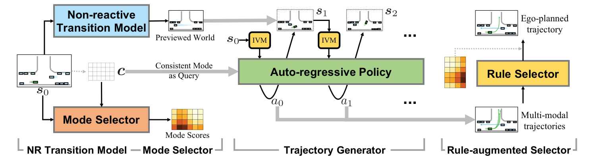Figure 2. CarPlanner contains four parts. (1) The non-reactive transition model takes initial state s0 as input and predicts the future trajectories of traffic agents. (2) The mode selector outputs scores based on the initial state and the modes c. (3) The trajectory generator obeys an auto-regressive structure condition on the consistent mode and produces mode-aligned multi-modal trajectories. (4) The rule- augmented selector compensates the mode scores by safety, comfort, and progress metrics.
图2. CarPlanner 包含四个部分。 (1) 非反应式过渡模型接收初始状态 s0 作为输入，并预测交通代理的未来轨迹。 (2) 模式选择器根据初始状态和模式 c 输出分数。 (3) 轨迹生成器遵循一致模式下的自回归结构条件，产生模式对齐的多模态轨迹。 (4) 规则增强的选择器通过安全、舒适性和进展度量补偿模式得分。
The use of IL to train planners based on human demonstrations has garnered significant interest recently. This approach leverages the driving expertise of experienced drivers who can safely and comfortably navigate a wide range of real-world scenarios, along with the added advantage of easily collectible driving data at scale [2, 9, 15]. Nu-
merous studies [5, 17, 29] have focused on developing innovative networks to enhance open-loop performance in this domain. However, the ultimate challenge of autonomous driving is achieving closed-loop operation, which is evaluated using driving-oriented metrics such as safety, adherence to traffic rules, comfort, and progress. This reveals a significant gap between the training and testing phases of planners.
使用IL（模仿学习）根据人类示范来训练规划者最近引起了显著的兴趣。这种方法利用了经验丰富的驾驶员的驾驶专长，他们能够安全舒适地应对各种真实世界的场景，并且还具有易于大规模收集驾驶数据的优势[2, 9, 15]。许多研究[5, 17, 29]集中在开发创新网络以增强此领域的开环性能。然而，自主驾驶的最终挑战是实现闭环操作，这通常通过诸如安全性、遵守交通规则、舒适性和进展等驾驶导向的指标来评估。这揭示了规划器训练和测试阶段之间的一个显著差距。
💡 上次提示: 文献[2, 9, 15]不需要使用标签化语言包围，应保留原格式
Moreover, IL is particularly vulnerable to issues such as distribution shift [28] and causal confusion [8]. The first issue results in suboptimal decisions when the system encounters scenarios that are not represented in the training data distribution. The second issue arises when networks inadvertently capture incorrect correlations and develop shortcuts based on input information, primarily due to the reliance on imitation loss from expert demonstrations.
Despite efforts in several studies [1, 3, 4, 42] to address these challenges, the gap between training and testing remains substantial.
此外，IL特别容易受到分布偏移[28]和因果混淆[8]等问题的影响。第一个问题会导致当系统遇到训练数据分布中未包含的场景时做出次优决策。第二个问题则发生在网络无意中捕捉到错误的相关性，并基于输入信息开发捷径，这主要是由于对专家演示中的模仿损失的依赖。
尽管有多项研究[1, 3, 4, 42]试图解决这些问题，但训练与测试之间的差距仍然很大。
💡 上次提示:
[[HEADER: 2.2. RL in Autonomous Driving]]
2.2. 自动驾驶中的强化学习
💡 上次提示:
In the field of autonomous driving, RL has demonstrated its effectiveness in addressing specific scenarios such as highway driving [22, 39], lane changes [14, 23], and unprotected left turns [22, 40]. Most methods directly learn policies over the control space, which includes throttle, brake, and steering commands. Due to the high frequency of control command execution, the simulation process can be timeconsuming, and exploration can be inconsistent [40].
Several works [40, 44] have proposed learning trajectory planners with actions defined as ego-planned trajectories, which temporally extend the exploration space and improve training efficiency. However, a trade-off exists between the trajectory horizon and training performance, as noted in ASAP-RL [40].
Increasing the trajectory horizon results in less reactive behaviors and a reduced amount of data, while a smaller trajectory horizon leads to challenges similar to those encountered in control space. Additionally, these methods typically employ a model-free setting, making them difficult to apply to the complex, diverse realworld scenarios found in large-scale driving datasets. In this paper, we propose adopting a model-based formulation that can facilitate RL training on large-scale datasets.
Under this formulation, we aim to overcome the trajectory horizon trade-off by using a transition model, which can provide a preview of the world in which our policy can make multistep decisions during testing.
增加轨迹预测的时长会减少反应性行为并降低数据量，而较小的轨迹预测时长则会导致类似于控制空间中的挑战。此外，这些方法通常采用无模型设置，使得它们难以应用于大规模驾驶数据集中复杂多样的现实场景。在本文中，我们提出采用基于模型的方法来促进大规模数据集上的强化学习训练。
在这种框架下，我们的目标是通过使用转换模型克服轨迹预测时长的权衡问题。该转换模型可以在测试过程中为我们的策略提供未来世界的预览，使其能够进行多步决策。
💡 上次提示:
[[HEADER: 3. Method]]
3. 方法
💡 上次提示:
[[HEADER: 3.1. Preliminaries]]
3.1. 前期工作
💡 上次提示:
Equation_1
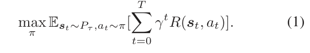MDP is used to model sequential decision problems, formulated as a tuple ⟨S, A, Pτ, R, ρ0, γ, T⟩. S is the state space. A is the action space. Pτ : S × A →∆(S) † is the state transition probability. R : S × A →R denotes the reward function and is bounded. ρ0 ∈∆(S) is the initial state distribution. T is the time horizon and γ is the discount factor of future rewards.
The state-action sequence is defined as τ = (s0, a0, s1, a1, . . . , sT ), where st ∈S and at ∈A are the state and action at time step t. The objective of RL is to maximize the expected return:
Vectorized state representation. State st contains map and agent information in vectorized representation [10]. Map information m includes the road network, traffic lights, etc, which are represented by polylines and polygons. Agent information includes the current and past poses of ego vehicle and other traffic agents, which are represented by polylines. The index of ego vehicle is 0 and the indices of traffic agents range from 1 to N.
马尔可夫决策过程（MDP）用于建模序贯决策问题，形式化为元组 ⟨S, A, Pτ, R, ρ0, γ, T⟩。其中 S 是状态空间。A 是动作空间。Pτ : S × A → ∆(S)† 表示状态转移概率。R : S × A → R 代表奖励函数，并且是有界的。ρ0 ∈ ∆(S) 是初始状态分布。T 是时间范围，γ 是未来奖励的折扣因子。
状态-动作序列定义为 τ = (s0, a0, s1, a1, ..., sT)，其中 st ∈ S 和 at ∈ A 分别表示在时间步 t 的状态和动作。强化学习（RL）的目标是最大化期望回报：
矢量化状态表示。状态 st 包含地图和代理信息的矢量化表示 [10]。地图信息 m 包括道路网络、交通灯等，这些通过多段线和多边形来表示。代理信息包括 ego 车辆及其过去位置和其他交通代理当前的位置，这些也通过多段线来表示。ego 车辆的索引为 0，而交通代理的索引范围从 1 到 N。
💡 上次提示:
For each agent i, its history is denoted as si t−H:t, i ∈{0, 1, . . . , N}, where H is the history time horizon.
对于每个代理 \(i\)，其历史记录表示为 \(s_i^{t-H:t}\), \(i \in \{0, 1, \ldots, N\}\)，其中 \(H\) 是历史时间范围。
💡 上次提示:
[[HEADER: 3.2. Problem Formulation]]
3.2. 问题表述
💡 上次提示:
Equation_2
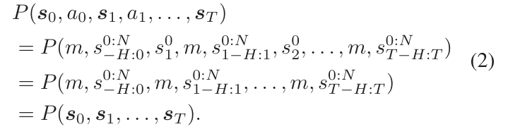Equation_3
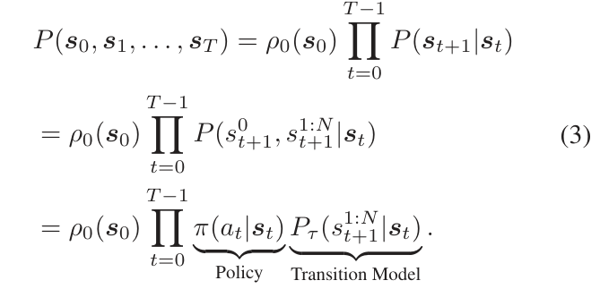Equation_4
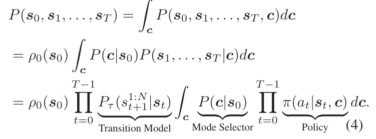We model the trajectory planning task as a sequential decision process and decouple the auto-regressive models into policy and transition models. The key to connect trajectory planning and auto-regressive models is to define the action as the next pose of ego vehicle, i.e., at = s0 t+1. Therefore, after forwarding the auto-regressive model, the decoded pose is collected to be the ego-planned trajectory.
Specifically, we can reduce the state-action sequence to the state sequence under this definition and vectorized representation:
The state sequence can be further formulated in an autoregressive fashion and decomposed into policy and transition model:
From Eq. (3), we can clearly identify the inherent problem associated with the typical auto-regressive approach: inconsistent behaviors across time steps arise from the policy distribution, which depends on random sampling from the action distribution.
我们将轨迹规划任务建模为一个序列决策过程，并将自回归模型拆分为策略模型和转换模型。连接轨迹规划与自回归模型的关键在于定义动作ego车辆的下一姿态，即 \(a_t = s_{t+1}\)。因此，在前向传播自回归模型后，解码得到的姿态被收集起来作为ego车辆的计划轨迹。
具体而言，根据这一定义和矢量化表示，我们可以将状态-动作序列简化为状态序列：
状态序列可以进一步以自回归的方式进行形式化，并分解为策略模型和转换模型：
从公式（Equation3）中可以看出，典型的自回归方法所固有的问题：时间步之间的行为不一致是由依赖于动作分布的随机采样的策略分布引起的。
💡 上次提示: Eq. (3)应该译为公式（Equation3），而不是公式(3)
To solve the above problem, we introduce consistent mode information c that remains unchanged across time steps into the auto-regressive fashion:
'
Since we focus on the ego trajectory planning, the consistent mode c does not impact transition model.
This consistent auto-regressive formulation defined in Eq. (4) reveals a generation-selection framework where the mode selector scores each mode based on the initial state s0 and the trajectory generator generates multi-modal trajectories via sampling from the mode-conditioned policy. Non-reactive transition model. The transition model formulated in Eq. (4) needs to be employed in every time step since it produces the poses of traffic agents at time step t + 1 based on current state st.
为了解决上述问题，我们引入了一种在时间步长上保持不变的一致模式信息 c，将其纳入自回归模型中：
由于我们专注于 ego 轨迹规划，一致模式 c 不会影响过渡模型。
这种一致的自回归公式（Equation 4）定义了一个生成-选择框架，在该框架下，模式选择器根据初始状态 s0 对每个模式进行评分，轨迹生成器通过从条件于模式的策略中采样来生成多模态轨迹。非反应性过渡模型。根据 Equation 4 形式化的过渡模型需要在每一个时间步长上使用，因为它会基于当前状态 st 产生交通代理在时间步 t+1 的姿态。
💡 上次提示:
In practice, this process is time-consuming and we do not observe a performance improvement by using this transition model, therefore, we use trajectory predictors P(s1:N 1:T |s0) as non-reactive transition model that produces all future poses of traffic agents in one shot given initial state s0.
在实际操作中，这一过程耗时较长，并且我们并未观察到使用此过渡模型能带来性能提升。因此，我们采用轨迹预测器 \( P(s_1:N, 1:T | s_0) \) 作为非反应性过渡模型，该模型能够在给定初始状态 \( s_0 \) 的情况下一次性生成所有未来的姿态。
💡 上次提示:
[[HEADER: 3.3. Planner Architecture]]
3.3. 计划器架构
💡 上次提示:
The framework of our proposed CarPlanner is illustrated in Fig. 2, comprising four key components: 1) the nonreactive transition model, 2) the mode selector, 3) the trajectory generator, and 4) the rule-augmented selector.
Our planner operates within a generation-selection framework. Given an initial state s0 and all possible Nmode modes, the trajectory selector evaluates and assigns scores to each mode. The trajectory generator then produces Nmode trajectories that correspond to their respective modes. For trajectory generator, the initial state s0 is replicated Nmode times, each associated with one of the Nmode modes, effectively creating Nmode parallel worlds.
The policy is executed within these previewed worlds. During the policy rollout, a trajectory predictor acts as the state transition model, generating future poses of traffic agents across all time horizons.
我们提出的CarPlanner的框架如图2所示，包含四个关键组件：1) 非反应性转移模型，2) 模式选择器，3) 轨迹生成器，以及4) 规则增强的选择器。
我们的规划器在生成-选择框架下运作。给定初始状态s0和所有可能的Nmode模式，轨迹选择器评估并为每个模式分配分数。随后，轨迹生成器产生与各自模式对应的Nmode条轨迹。对于轨迹生成器而言，初始状态s0被复制Nmode次，每次与一个不同的Nmode模式关联，从而创建了Nmode个平行世界。
策略在这些预览的世界中执行。在策略展开过程中，轨迹预测器作为状态转移模型，生成所有时间范围内的交通代理的未来姿态。
💡 上次提示:
[[HEADER: 3.3.1. Non-reactive Transition Model]]
3.3.1. 非反应性转换模型
💡 上次提示:
3.3.1. Non-reactive Transition Model This module takes the initial state s0 as input and outputs the future trajectories of traffic agents. The initial state is processed by agent and map encoders, followed by a selfattention Transformer encoder [38] to fuse the agent and map features. The agent features are then decoded into future trajectories. Agent and map encoders. The state s0 contains both map and agent information. The map information m consists of Nm,1 polylines and Nm,2 polygons.
The polylines describe lane centers and lane boundaries, with each polyline containing 3Np points, where 3 corresponds to the lane center, the left boundary, and the right boundary. Each point is with dimension Dm = 9 and includes the following attributes: x, y, heading, speed limit, and category. When concatenated, the points of the left and right boundaries together with the center point yield a dimension of Nm,1 × Np × 3Dm.
3.3.1 非反应性过渡模型
该模块以初始状态 \(s_0\) 作为输入，并输出交通代理的未来轨迹。初始状态首先经过代理编码器和地图编码器处理，然后通过自注意力变换器编码器 [38] 来融合代理和地图特征。之后，代理特征被解码为未来的轨迹。
**代理编码器和地图编码器**
状态 \(s_0\) 包含地图信息和代理信息。地图信息 \(m\) 由 \(N_{m,1}\) 条多边线和 \(N_{m,2}\) 个多边形组成。
多边线描述车道中心和边界，每条多边线包含 \(3N_p\) 个点，其中 3 表示车道中心、左侧边界和右侧边界。每个点的维度为 \(D_m = 9\)，包括以下属性：x 坐标、y 坐标、航向角、速度限制以及类别。当将这些点连接起来时，左侧和右侧边界的点与中心点一起构成了一个维度为 \(N_{m,1} \times N_p \times 3D_m\) 的特征向量。
💡 上次提示:
We leverage a PointNet [26] to extract features from the points of each polyline, resulting in a dimensionality of Nm,1 × D, where D represents the feature dimension. The polygons represent intersections, crosswalks, stop lines, etc, with each polygon containing Np points. We utilize another PointNet to extract features from the points of each polygon, producing a dimension of Nm,2 × D.
We then concatenate the features from both polylines and polygons to form the overall map features, resulting in a dimension of Nm × D. The agent information A consists of N agents, where each agent maintains poses for the past H time steps. Each pose is with dimension Da = 10 and includes the following attributes: x, y, heading, velocity, bounding box, time step, and category. Consequently, the agent information has a dimension of N × H × Da.
We apply another PointNet to extract features from the poses of each agent, yielding an agent feature dimension of N × D.
我们利用PointNet [26] 从每个多边线的点中提取特征，结果维度为Nm,1 × D，其中D表示特征维度。多边形代表交叉口、人行横道、停止线等，每个多边形包含Np个点。我们再使用另一个PointNet从每个多边形的点中提取特征，生成一个维度为Nm,2 × D。
然后我们将多边线和多边形的特征进行拼接，形成整体地图特征，结果维度为Nm × D。代理信息A由N个代理组成，其中每个代理维护过去H个时间步的姿势。每个姿势的维度Da = 10，并包括以下属性：x, y, 方向、速度、边界框、时间步和类别。因此，代理信息的维度为N × H × Da。
我们再应用一个PointNet从每个代理的姿态中提取特征，生成代理特征维度为N × D。
💡 上次提示:
[[HEADER: 3.3.2. Mode Selector]]
3.3.2. 模式选择器
💡 上次提示:
This module takes s0 and longitudinal-lateral decomposed mode information as input and outputs the probability of each mode. The number of modes Nmode = NlatNlon. Route-speed decomposed mode. To capture the longitudinal behaviors, we generate Nlon modes that represent the average speed of the trajectory associated with each mode. Each longitudinal mode clon,j is defined as a scalar value of j Nlon , repeated across a dimension D.
As a result, the dimensionality of the longitudinal modes is Nlon × D. For lateral behaviors, we identify Nlat possible routes from the map using a graph search algorithm. These routes correspond to the lanes available for the ego vehicle. The dimensionality of these routes is Nlat × Nr × Dm. We employ another PointNet to aggregate the features of the Nr points along each route, producing a lateral mode with a dimension of Nlat × D.
该模块以s0和纵向-横向分解模式信息作为输入，并输出每个模式的概率。模式的数量Nmode = Nlat×Nlon。路径-速度分解模式。为了捕捉纵向行为，我们生成了Nlon个模式来表示与每个模式相关的轨迹的平均速度。每个纵向模式clon,j被定义为一个在维度D上重复出现的标量值j。
因此，纵向模式的维度是Nlon × D。对于横向行为，我们使用图搜索算法从地图中识别出Nlat条可能的路径。这些路径对应于供 ego 车辆使用的车道。这些路径的维度是Nlat × Nr × Dm。我们又使用另一个PointNet来聚合每条路径上Nr个点的特征，从而生成一个横向模式，其维度为Nlat × D。
💡 上次提示:
To create a comprehensive mode representation c, we combine the lateral and longitudinal modes, resulting in a combined dimension of Nlat × Nlon × 2D. To align this mode information with other feature dimensions, we pass it through a linear layer, mapping it back to Nlat × Nlon × D. Query-based Transformer decoder. This decoder is employed to fuse the mode features with map and agent features derived from s0.
In this framework, the mode serves as the query, while the map and agent information act as the keys and values. The updated mode features are decoded through a multi-layer perceptron (MLP) to yield the scores for each mode, which are subsequently normalized using the softmax operator.
为了创建一个全面的模式表示c，我们将横向和纵向模式结合起来，形成一个Nlat × Nlon × 2D的综合维度。为使这种模式信息与其它特征维度对齐，我们将其通过一个线性层映射回Nlat × Nlon × D。基于查询的Transformer解码器被用于融合从s0中提取的地图和代理信息以及模式特征。
在这个框架中，模式作为查询，而地图和代理信息则充当键和值。更新后的模式特征通过多层感知机（MLP）进行解码，以生成每个模式的分数，随后使用softmax操作对这些分数进行归一化。
💡 上次提示:
[[HEADER: 3.3.3. Trajectory Generator]]
3.3.3. 轨迹生成器
💡 上次提示:
This module operates in an auto-regressive manner, recurrently decoding the next pose of the ego vehicle at, given the current state st, and consistent mode information c. Invariant-view module (IVM). Before feeding the mode and state into the network, we preprocess them to eliminate time information. For the map and agent information in state st, we select the K-nearest neighbors (KNN) to the ego current pose and only feed these into the policy.
K is set to the half of map and agent elements respectively. Regarding the routes that capture lateral behaviors, we filter out the segments where the point closest to the current pose of the ego vehicle is the starting point, retaining Kr points. In this case, Kr is set to a quarter of Nr points in one route. Finally, we transform the routes, agent, and map poses into the coordinate frame of the ego vehicle at the current time step t.
该模块以自回归的方式运行，递归地解码给定当前状态 \( s_t \) 和一致模式信息 \( c \) 下ego车辆的下一个姿态。在将模式和状态输入网络之前，我们对其进行预处理以消除时间信息。对于状态 \( s_t \) 中的地图和代理信息，我们选择 ego 当前姿态的 K 个最近邻（KNN），并仅将这些信息馈入策略中。
K 被设置为地图和代理元素的一半。关于捕捉侧向行为的路线，我们过滤掉起点是当前 ego 车辆最接近点的路段，并保留 \( K_r \) 点。在这种情况下，\( K_r \) 被设置为每条路线中 \( N_r \) 点的四分之一。最后，我们将路线、代理和地图姿态转换到当前时间步 \( t \) 的 ego 车辆坐标系中。
💡 上次提示:
We subtract the historical time steps t −H : t from the current time step t, yielding time steps in range −H : 0.
Query-based Transformer decoder. We employ the same backbone network architecture as the mode selector, but with different query dimensions. Due to the IVM and the fact that different modes yield distinct states, the map and agent information cannot be shared among modes. As a result, we fuse information for each individual mode. Specifically, the query dimension is 1×D, while the dimensions of the keys and values are (N + Nm) × D. The output feature dimension remains 1 × D.
我们从当前时间步t减去历史时间步t-H : t，得到时间范围为−H : 0的区间。
基于查询的Transformer解码器。我们采用与模式选择器相同的骨干网络架构，但查询维度不同。由于IVM以及不同的模式会产生不同的状态，地图和代理信息不能在各模式之间共享。因此，我们将为每个单独的模式融合信息。具体而言，查询维度为1×D，键和值的维度分别为(N + Nm) × D。输出特征维度保持为1×D。
💡 上次提示:
Note that Transformer decoder can process information from multiple modes in parallel, eliminating the need to handle each mode sequentially. Policy output. The mode feature is processed by two distinct heads: a policy head and a value head. Each head comprises its own MLP to produce the parameters for the action distribution and the corresponding value estimate. We employ a Gaussian distribution to model the action distribution, where actions are sampled from this distribution during training.
In contrast, during inference, we utilize the mean of the distribution to determine the actions.
请注意，Transformer解码器可以并行处理多种模式的信息，从而消除按顺序处理每个模式的需要。策略输出方面，模式特征由两个不同的头进行处理：一个策略头和一个价值头。每个头都包含自己的多层感知机（MLP），以生成动作分布的参数以及相应的价值估计。我们采用高斯分布来建模动作分布，在训练过程中从该分布中采样动作。
相比之下，在推理过程中，我们使用分布的均值来确定动作。
💡 上次提示:
[[HEADER: 3.3.4. Rule-augmented Selector]]
3.3.4. Rule-augmented Selector
💡 上次提示:
This module is only utilized during inference and takes as input the initial state s0, the multi-modal ego-planned trajectories, and the predicted future trajectories of agents. It calculates driving-oriented metrics such as safety, progress, comfort. A comprehensive score is obtained by the weighted sum of rule-based scores and the mode scores provided by the mode selector. The ego-planned trajectory with the highest score is selected as the output of the planner.
该模块仅在推理过程中被利用，输入包括初始状态s0、多模态自我规划轨迹以及预测的其他代理的未来轨迹。它计算诸如安全、进展和舒适度等与驾驶相关的指标。通过基于规则得分和模式选择器提供的模式得分加权求和获得一个综合评分。得分最高的自我规划轨迹被选作规划器的输出。
💡 上次提示:
[[HEADER: 3.4. Training]]
3.4. 训练
💡 上次提示:
We first train the non-reactive transition model and freeze the weights during the training of the mode selector and trajectory generator. Instead of feeding all modes to the generator, we apply a winner-takes-all strategy, wherein a positive mode is assigned based on the ego ground-truth trajectory and serves as a condition for the trajectory generator. Mode assignment. For the lateral mode, we assign the route closest to the endpoint of ego ground-truth trajectory as the positive lateral mode.
For the longitudinal mode, we partition the longitudinal space into Nlon intervals and assign the interval containing the endpoint of the ground-truth trajectory as the positive longitudinal mode. Reward function. To handle diverse scenarios, we use the negative displacement error (DE) between the ego future pose and the ground truth as a universal reward. We also introduce additional terms to improve trajectory quality: collision rate and drivable area compliance.
我们首先训练非反应性过渡模型，并在模式选择器和轨迹生成器的训练过程中冻结其权重。而不是将所有模式都输入生成器，我们应用“赢家通吃”策略，在此策略中，根据ego的真实地面轨迹分配一个正模式，并将其作为轨迹生成器的条件。模式分配。对于横向模式，我们将与ego真实地面轨迹终点最近的路线分配为正横向模式。
对于纵向模式，我们将纵向空间划分为Nlon个区间，并将包含真实轨迹终点的区间分配为正纵向模式。奖励函数。为了处理各种场景，我们使用ego未来姿态与真实值之间的负位移误差（DE）作为通用奖励。我们还引入了额外项以提高轨迹质量：碰撞率和可通行区域合规性。
💡 上次提示:
If the future pose collides or falls outside the drivable area, the reward is set to -1; otherwise, it is 0. Mode dropout. In some cases, there are no available routes for ego to follow. However, since routes serve as queries in Transformer, the absence of a route can lead to unstable or hazardous outputs. To mitigate this issue, we implement a mode dropout module during training that randomly masks routes to prevent over-reliance on this information. Loss function.
For the selector, we use cross-entropy loss that is the negative log-likelihood of the positive mode and a side task that regresses the ego ground-truth trajectory. For the generator, we use PPO [31] loss that consists of three parts: policy improvement, value estimation, and entropy. Full description can be found in supplementary.
如果未来姿态发生碰撞或落在不可行驶区域之外，奖励将被设定为-1；否则，奖励为0。模式丢弃。在某些情况下，没有可供ego跟随的有效路径。然而，由于路径作为Transformer中的查询项，路径的缺失可能导致不稳定的或危险的输出。为了缓解这一问题，在训练过程中我们实现了一个模式丢弃模块，随机遮蔽路径以防止过度依赖这些信息。损失函数。
对于选择器，我们使用交叉熵损失，即正模式的负对数似然，并且还有一个辅助任务来回归ego的真实轨迹。对于生成器，我们采用PPO [31] 损失，该损失由三部分组成：策略改进、价值估计和熵。完整描述详见补充材料。
💡 上次提示:
[[HEADER: 4. Experiments]]
4. 实验
💡 上次提示:
[[HEADER: 4.1. Experimental Setup]]
4.1. 实验设置
💡 上次提示:
Resource Table_1
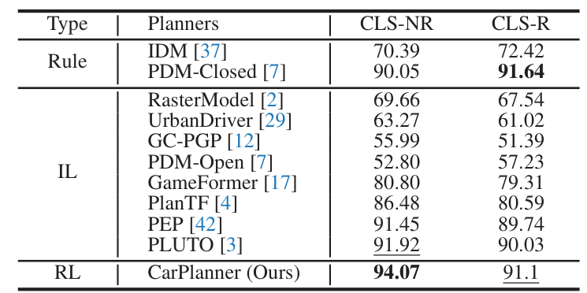Table 1. Comparison with SOTAs in Test14-Random. Based on the type of trajectory generator, all methods are categorized into Rule, IL, and RL. The best result is in bold and the second best result is underlined.
表1. Test14-Random 中与最先进的方法比较。 根据轨迹生成器类型，所有方法被分为规则、IL 和 RL 类别。 最佳结果加粗显示，第二好的结果下划线标注。
Resource Table_2
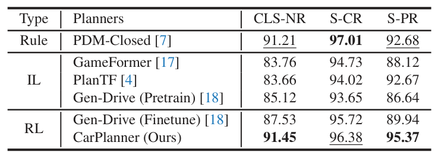Table 2. Comparison with SOTAs in Reduced-Val14 with non- reactive traffic agents.
表2. Reduced-Val14 无反应式交通代理中的与最先进的方法比较。
Dataset and simulator. We use nuPlan [2], a large-scale closed-loop platform for studying trajectory planning in autonomous driving, to evaluate the efficacy of our method. The nuPlan dataset contains driving log data over 1,500 hours collected by human expert drivers across 4 diverse cities. It includes complex, diverse scenarios such as lane follow and change, left and right turn, traversing intersections and bus stops, roundabouts, interaction with pedestrians, etc.
As a closed-loop platform, nuPlan provides a simulator that uses scenarios from the dataset as initialization. During the simulation, traffic agents are taken over by logreplay (non-reactive) or an IDM [37] policy (reactive). The ego vehicle is taken over by user-provided planners. The simulator lasts for 15 seconds and runs at 10 Hz.
At each timestamp, the simulator queries the planner to plan a trajectory, which is tracked by an LQR controller to generate control commands to drive the ego vehicle. Benchmarks and metrics. We use two benchmarks: Test14-Random and Reduced-Val14 for comparing with other methods and analyzing the design choices within our method. The Test14-Random provided by PlanTF [4] contains 261 scenarios. The Reduced-Val14 provided by PDM [7] contains 318 scenarios.
We use the closed-loop score (CLS) provided by the official nuPlan devkit† to assess the performance of all methods. The CLS score comprehends different aspects such as safety (S-CR, S-TTC), drivable area compliance (S-Area), progress (S-PR), comfort, etc. Based on the different behavior types of traffic agents, CLS is detailed into CLS-NR (non-reactive) and CLS-R (reactive). Implementation details. We follow PDM [7] to construct our training and validation splits.
在每个时间戳，模拟器查询规划器来计划一条轨迹，该轨迹由LQR控制器跟踪以生成控制命令来驱动ego车辆。基准测试和评估指标。我们使用两个基准：Test14-Random和Reduced-Val14来进行与其他方法的比较以及分析我们方法中的设计选择。PlanTF [4]提供的Test14-Random包含261个场景，PDM [7]提供的Reduced-Val14包含318个场景。
我们使用官方nuPlan devkit†提供的闭环评分（CLS）来评估所有方法的性能。CLS分数涵盖了诸如安全性（S-CR, S-TTC）、可行驶区域合规性（S-Area）、进度（S-PR）、舒适度等不同方面。根据交通代理的不同行为类型，CLS进一步细分为CLS-NR（非反应型）和CLS-R（反应型）。实现细节。我们遵循PDM [7]来构建我们的训练集和验证集划分。
💡 上次提示:
The size of the training set is 176,218 where all available scenario types are used, with a number of 4,000 scenarios per type. The size of the validation set is 1,118 where 100 scenarios with 14 types are selected. We train all models with 50 epochs in 2 NVIDIA 3090 GPUs. The batch size is 64 per GPU. We use AdamW optimizer with an initial learning rate of 1e-4 and reduce the learning rate when the validation loss stops decreasing with a patience of 0 and decrease factor of 0.3.
For RL training, †https://github.com/motional/nuplan-devkit
we set the discount γ = 0.1 and the GAE parameter λ = 0.9. The weights of value, policy, and entropy loss are set to 3, 100, and 0.001, respectively. The number of longitudinal modes is set to 12 and a maximum number of lateral modes are set to 5.
训练集的大小为176,218，使用了所有可用的情景类型，每种类型有4,000个情景。验证集的大小为1,118，从中选择了100个情景，包含14种类型。我们在两块NVIDIA 3090 GPU上以50个epochs训练所有模型。每个GPU的批量大小为64。我们使用AdamW优化器，并设置初始学习率为1e-4，在验证损失停止下降时降低学习率，耐心值设为0，减少因子为0.3。
对于RL训练，https://github.com/motional/nuplan-devkit 中设置折扣因子γ = 0.1和GAE参数λ = 0.9。价值损失、策略损失和熵损失的权重分别设为3、100和0.001。纵向模式的数量设置为12，最大横向模式数量设置为5。
💡 上次提示: 文章外链网址无需使用标签化语言包围，保留原文即可
[[HEADER: 4.2. Comparison with SOTAs]]
4.2. 与SOTA方法的比较
💡 上次提示:
Resource Table_3
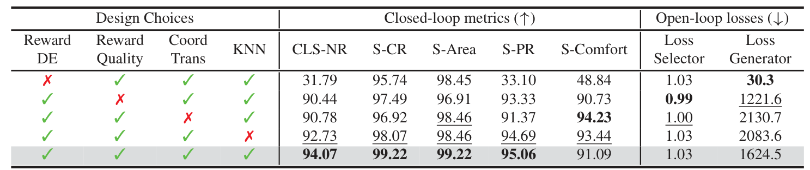Table 3. Ablation studies on the design choices in RL training. Results are in Test14-random non-reactive benchmark.
表3. 在 RL 训练中设计选择的消融研究。 结果基于 Test14-random 非反应式基准。
SOTAs. We categorize the methods into Rule, IL, and RL based on the type of trajectory generator. (1) PDM [7] wins the nuPlan challenge 2023, its IL-based and rule-based variants are denoted as PDM-Open and PDM-Closed, respectively.
PDM-Closed follows the generation-selection framework where IDM is used to generate multiple candidate trajectories and rule-based selector considering safety, progress, and comfort is used to select the best trajectory. (2) PLUTO [3] also obeys the generation-selection framework and uses contrastive IL to incorporate various data augmentation techniques and trains the generator. (3) GenDrive [18] is a concurrent work that follows a pretrainfinetune pipeline where IL is used to pretrain a diffusionbased planner and RL is used to finetune the denoising process based on a reward model trained by AI preference.
最先进方法（SOTAs）。我们根据轨迹生成器的类型将方法分为规则、IL和RL三类。（1）PDM [7] 在 nuPlan 挑战赛2023中获胜，其基于IL和规则的方法分别表示为 PDM-Open 和 PDM-Closed。
PDM-Closed 遵循生成-选择框架，在该框架下使用 IDM 生成多个候选轨迹，并采用考虑安全、进度和舒适性的基于规则的选择器来选择最佳轨迹。（2）PLUTO [3] 同样遵循生成-选择框架，利用对比IL技术结合多种数据增强技术进行训练。 （3）GenDrive [18] 是一项并行工作，它采用了预训练-微调管道，在该管道中使用IL对基于扩散的规划器进行预训练，并通过由AI偏好训练得到的奖励模型对去噪过程进行微调以实现RL。
💡 上次提示:
Results. We compare our method with SOTAs in Test14Random and Reduced-Val14 benchmark as shown in Tab. 1 and Tab. 2. Overall, our CarPlanner demonstrates superior performance, particularly in non-reactive environments.
In the non-reactive setting, our method achieves the highest scores across all metrics, with an improvement of 4.02 and 2.15 compared to PDM-Closed and PLUTO, establishing the potential of RL and the superior performance
of our proposed framework. Moreover, CarPlanner reveals substantial improvement in the progress metric S-PR compared to PDM-Closed in Tab. 2 and comparable collision metric S-CR, indicating the ability of our method to improving driving efficiency while maintaining safe driving. Importantly, we do not apply any techniques commonly used in IL such as data augmentation [3, 4] and ego-history masking [11], underscoring the intrinsic capability of our approach to solving the closed-loop task.
结果。我们将我们的方法与Test14Random和Reduced-Val14基准中的SOTA进行比较，如表1和表2所示。总体而言，我们的CarPlanner展示了更优的性能，特别是在非反应性环境中。
在非反应性设置中，我们的方法在所有指标上均获得最高分数，相较于PDM-Closed和PLUTO分别提高了4.02和2.15分，这表明了强化学习（RL）的潜力以及我们所提出框架的优越性能。此外，如表2所示，在进度度量S-PR方面，CarPlanner相比PDM-Closed有显著改进，并且在碰撞度量S-CR上表现相当，这表明我们的方法能够在提高驾驶效率的同时保持安全驾驶。重要的是，我们在实验中未使用IL中常用的诸如数据增强[3, 4]和自体历史遮蔽[11]等技术，这进一步证明了我们方法的内在能力以解决闭环任务。
💡 上次提示:
In the reactive setting, while our method performs well, it falls slightly short of PDM-Closed. This discrepancy arises because our model was trained exclusively in nonreactive settings and has not interacted with the IDM policy used by reactive settings; as a result, our model is less robust to disturbances generated by reactive agents during testing.
在反应性设置中，虽然我们的方法表现良好，但在某些方面仍略逊于PDM-Closed。这种差异的原因在于，我们的模型仅在非反应性环境中进行了训练，并未与反应性设置中使用的IDM策略进行互动；因此，在测试过程中，当遇到由反应性代理生成的干扰时，我们的模型不够 robust。
💡 上次提示:
[[HEADER: 4.3. Ablation Studies]]
4.3. Ablation Studies
💡 上次提示:
We investigate the effects of different design choices in RL training. The results are shown in Tab. 3. Influence of reward items. When using the quality reward only, the planner tends to generate static trajectories and achieves a low progress metric. This occurs because the ego vehicle begins in a safe, drivable state, but moving forward is at risk of collisions or leaving the drivable area.
On the other hand, when the quality reward is incorporated alongside the DE reward, it leads to significant improvements in closed-loop metrics compared to using the DE reward alone. For instance, the S-CR metric rises from 97.49 to 99.22, and the S-Area metric rises from 96.91 to 99.22. These improvements indicate that the quality reward encourages safe and comfortable behaviors. Effectiveness of IVM.
我们研究了不同设计选择在强化学习（RL）训练中的影响。结果如表3所示。奖励项的影响。仅使用质量奖励时，规划器倾向于生成静态轨迹，并且进度度量较低。这是因为ego车辆初始状态处于安全可行驶的状态，但向前移动则面临碰撞或离开可行驶区域的风险。
另一方面，在引入质量奖励的同时结合使用DE奖励，与单独使用DE奖励相比，在闭环度量上取得了显著改进。例如，S-CR指标从97.49上升到99.22，S-Area指标从96.91上升到99.22。这些改进表明，质量奖励鼓励安全舒适的驾驶行为。IVM的有效性。
💡 上次提示:
The results show that the coordinate transformation and KNN techniques in IVM notably improve closed-loop metrics and generator loss. For instance, with the coordinate transformation technique, the overall closed-loop score increases from 90.78 to 94.07, and S-PR rises from 91.37 to 95.06. These improvements are attributed to the enhanced accuracy of value estimation in RL, leading to generalized driving in closed-loop.
结果表明，IVM中的坐标变换和KNN技术显著提高了闭环指标和发电机损失。例如，使用坐标变换技术后，整体闭环得分为94.07（原为90.78），S-PR值从91.37提高到95.06。这些改进归因于在强化学习中价值估计精度的提升，从而实现了更通用的闭环驾驶行为。
💡 上次提示:
[[HEADER: 4.4. Extention to IL]]
4.4. 扩展到IL
💡 上次提示:
In addition to designing for RL training, we also extend the CarPlanner to incorporate IL. We conduct rigorous analysis to compare the effects of various design choices in IL and RL training, as summarized in Tab. 4. Our findings indicate that while mode dropout and selector side task contribute to both IL and RL training, ego-history dropout and backbone sharing, often effective in IL, are less suitable for RL. Ego-history dropout.
Previous works [1, 3, 4, 11] suggest that planners trained via IL may rely too heavily on past poses and neglect environmental state information. To counter this, we combine techniques from ChauffeurNet [1] and PlanTF [4] into an ego-history dropout module, randomly masking ego history poses and current velocity to alleviate the causal confusion issue.
除了为RL训练进行设计外，我们还将CarPlanner扩展以结合IL。我们进行了严格的分析来比较各种设计选择在IL和RL训练中的效果，并将这些结果总结在表4中。我们的研究发现，模式丢弃和选择器辅助任务对IL和RL训练都有贡献，而ego-history dropout和骨干共享——尽管在IL中通常有效，在RL中则不太适用。ego-history dropout。
以往的研究[1, 3, 4, 11]表明，通过IL训练的规划者可能会过度依赖过去的姿态信息并忽视环境状态信息。为解决这一问题，我们将ChauffeurNet [1]和PlanTF [4]中的技术结合起来，设计了一个ego-history dropout模块，随机遮蔽ego的历史姿态和当前速度以缓解因果混淆的问题。
💡 上次提示: Tab. 4应该翻译为表4，而不是Table_4
Our experiments confirm that ego-history dropout benifits IL training, as it improves performance across closed-loop metrics like S-CR and S-Area. However, in RL training, we observe a negative impact on advantage estimation due to ego-history dropout, which significantly affects the value part of generator loss, leading to closed-loop performance degradation.
This suggests that RL training naturally addresses the causal confusion problem inherent in IL by uncovering causal relationships that align with the reward signal, which explicitly encodes task-oriented preferences. This capability highlights the potential of RL to push the boundaries of learning-based planning. Backbone sharing. This choice, often used in IL-based multi-modal planners, promotes feature sharing across tasks to improve generalization.
我们的实验确认了自我历史丢弃对IL训练有益，因为它在如S-CR和S-Area等闭环指标上提高了性能。然而，在RL训练中，我们观察到由于自我历史丢弃导致的优势估计出现了负面影响，这显著影响了生成器损失中的价值部分，从而导致闭环性能下降。
这表明，RL训练自然解决了IL固有的因果混淆问题，通过揭示与奖励信号相一致的因果关系来解决这一问题，而该奖励信号明确编码了任务导向的偏好。这种能力突显了RL在基于学习的规划方面的潜力。主干网络共享。这种选择通常在基于IL的多模态规划器中被采用，促进了不同任务间的特征共享以提高泛化能力。
💡 上次提示:
While backbone sharing helps IL by balancing losses across trajectory generator and selector, we find it adversely affects RL training. Specifically, backbone sharing leads to higher losses for both the trajectory generator and selector in RL, indicating that gradients from each task interfere. The divergent objectives in RL for trajectory generation and selection tasks seem to conflict, reducing overall policy performance.
Consequently, we avoid backbone sharing in our RL framework to maintain task-specific gradient flow and improve policy quality.
虽然共享骨干网络有助于迁移学习（IL）通过在轨迹生成器和选择器之间平衡损失，但我们发现它对强化学习（RL）训练产生了不利影响。具体来说，共享骨干网络导致轨迹生成器和选择器的损失更高，表明每个任务的梯度相互干扰。轨迹生成和选择任务中强化学习的目标分歧似乎存在冲突，从而降低了整体策略性能。
因此，在我们的强化学习框架中，我们避免使用共享骨干网络以保持特定于任务的梯度流动并提高策略质量。
💡 上次提示:
[[HEADER: 4.5. Qualitative Results]]
4.5. 定性结果
💡 上次提示:
Resource Table_4
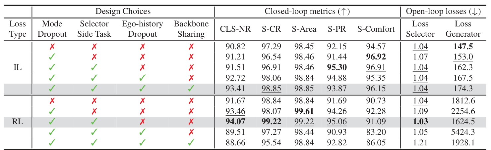Table 4. Effect of different components on IL and RL loss using our CarPlanner. Results are in Test14-random non-reactive benchmark.
表4. 我们 CarPlanner 中不同组件对 IL 和 RL 损失的影响。 结果基于 Test14-random 非反应式基准。
Resource Figure_3
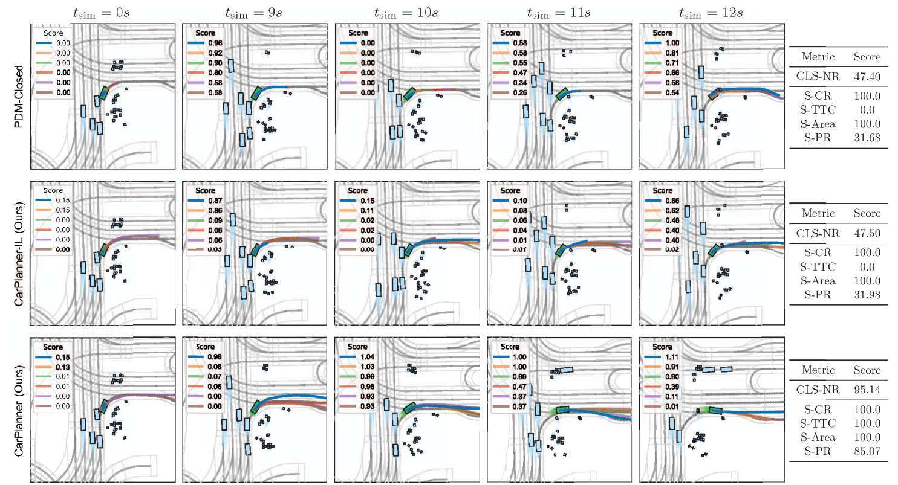Figure 3. Qualitative comparison of PDM-Closed and our method in non-reactive environments. The scenario is annotated as waiting for pedestrian to cross. In each frame shot, ego vehicle is marked as green. Traffic agents are marked as sky blue. Lineplot with blue is the ego planned trajectory.
图3. PDM-Closed 和我们方法在非反应式环境中的定性比较。 场景注释为等待行人过马路。 在每一帧中，ego 车辆标记为绿色。 交通代理标记为天蓝色。 线图以蓝色表示 ego 车辆的计划轨迹。
We provide qualitative results as shown in Fig. 3. In this scenario, ego vehicle is required to execute a right turn while navigating around pedestrians. In this case, Our method shows a smooth, efficient performance. From tsim = 0s to tsim = 9s, all methods wait for the pedestrians to cross the road. At tsim = 10s, an unexpected pedestrian goes back and prepares to re-cross the road. PDM-Closed is
unaware of this situation and takes an emergency stop, but it still intersects with this pedestrian. In contrast, our IL variant displays an awareness of the pedestrian’s movements and consequently conducts a braking maneuver. However, it still remains close to the pedestrian. Our RL method avoids this hazard by starting up early up to tsim = 9s and achieves the highest progress and safety metrics.
我们提供了定性结果，如图3所示。在这种场景中，ego车辆需要在行人周围导航时执行右转。在这种情况下，我们的方法显示了一种平滑且高效的性能。从tsim = 0秒到tsim = 9秒，所有方法都在等待行人过马路。在tsim = 10秒时，出现了一个意想不到的行人在退回并准备重新过马路的情况。PDM-Closed对此情况不知情，并采取了紧急停车措施，但仍与该行人发生了碰撞。相比之下，我们的IL变体能够意识到行人的移动，并因此执行了一次制动操作。然而，它仍然靠近行人。我们的RL方法通过在tsim = 9秒之前提前启动来避免这一危险，并实现了最高的进度和安全性指标。
💡 上次提示:
[[HEADER: 5. Conclusion]]
5. 结论
💡 上次提示:
In this paper, we introduce CarPlanner, a consistent auto-regressive planner aiming at large-scale RL training. Thanks to the proposed framework, we train an RL-based planner that outperforms existing RL-, IL-, and rule-based SOTAs. Furthermore, we provide analysis indicating the characteristics of IL and RL, highlighting the potential of RL to take a further step toward learning-based planning.
Limitations and future work. RL needs delicate design and is prone to input representation. RL can overfit its training environment and suffer from performance drop in unseen environments [21]. Our method leverages expert-aided reward design to guide exploration. However, this approach may constrain the full potential of RL, as it inherently relies on expert demonstrations and may hinder the discovery of solutions that surpass human expertise.
在本文中，我们介绍了CarPlanner，这是一种旨在进行大规模强化学习（RL）训练的一致自回归规划器。得益于所提出的框架，我们训练了一个基于RL的规划器，其性能优于现有的基于RL、IL和规则的方法。此外，我们还提供了分析以说明IL和RL的特点，并突显了RL向基于学习的规划迈进的可能性。
局限性和未来工作。强化学习需要精细的设计并且容易受到输入表示的影响。强化学习可能会在其训练环境中过拟合，并在未见过的环境中表现下降[21]。我们的方法利用专家辅助奖励设计来引导探索。然而，这种方法可能限制了RL的全部潜力，因为它本质上依赖于专家演示，可能会阻碍发现超越人类专业知识的解决方案。
💡 上次提示:
Future work aims to develop robust RL algorithms capable of overcoming these limitations, enabling autonomous exploration and generalization across diverse environments.
未来的工作旨在开发稳健的强化学习算法，以克服这些限制，从而实现自主探索并在多种环境中进行泛化。
💡 上次提示:
[[HEADER: 6. Acknowledgement]]
6. 致谢
💡 上次提示:
Many thanks to Jingke Wang for helpful discussions and all reviewers for improving the paper. This work was supported by Zhejiang Provincial Natural Science Foundation of China under Grant No. LD24F030001, and by the National Nature Science Foundation of China under Grant 62373322.
感谢 Jingke Wang 在讨论中提供的帮助，以及所有审稿人对本文的改进。本研究得到了浙江省自然科学基金（项目编号：LD24F030001）和国家自然科学基金（项目编号：62373322）的支持。
💡 上次提示: